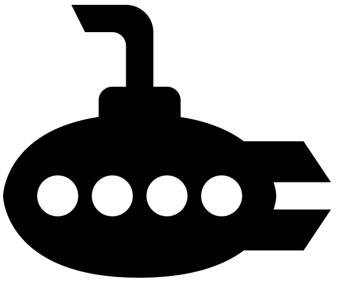

class: center, middle # Docker on AWS: from EC2 to ECS `containerization -> orchestration` <br><br> <img src="images/aws-docker.png" alt="docker and aws" style="width:250px;"> <br><br><br> <small>Presented by *Michael Herman*</small> --- ## Agenda -- ##### (1) Intro 1. About Me 1. Objectives 1. Project Overview -- ##### (2) Containerization 1. Docker Compose and Machine 1. EC2 Deployment -- ##### (3) Orchestration 1. What is Container Orchestration? 1. Why ECS? 1. Orchestration Feature Wish-list 1. Elastic Load Balancing (ELB) 1. EC2 Container Registry (ECR) 1. EC2 Container Service (ECS) -- ##### (4) Zero-downtime Deploy Demo 😱 --- ## About Michael ``` $ whoami michael.herman ``` -- #### Day Job: Software Engineer at [ClickFox](https://www.clickfox.com/). <img src="images/clickfox.png" style="max-width: 4%; border:0; box-shadow: none;" alt="clickfox logo"> -- #### Docker: 1. Avid Docker user since 2014. 1. Last year I architected and set up [On-Demand Environments With Docker and AWS ECS](http://mherman.org/blog/2017/09/18/on-demand-test-environments-with-docker-and-aws-ecs/). -- #### Also: 1. Co-founder/author of [Real Python](https://realpython.com) 1. 😍 - [tech writing/education](http://mherman.org), [open source](http://github.com/mjhea0), [financial models](http://www.starterfinancialmodel.com/), [radiohead](http://radiohead.com/) <img src="images/me.png" style="max-width: 10%; border:0; box-shadow: none; padding-top:10px" alt="me"> --- ## Objectives By the end of this talk, you should be able to... -- 1. Explain what **container orchestration** is and why you may need to incorporate an orchestration tool into your deployment process -- 1. Discuss the pros and cons of using EC2 Container Service (ECS) over other **orchestration tools** like Kubernetes, Mesos, and Docker Swarm -- 1. Configure an **Application Load Balancer** along with **ECS** to run a set of microservices -- 1. Integrate **ECR** into the deployment process -- 1. Send **container logs** to CloudWatch -- 1. Update a running container via a **zero-downtime deployment** strategy to not disrupt the current users or your application --- ## Project Overview https://github.com/mjhea0/microservice-ping-pong | Container | Image | Tech | |-------------|-----------|---------| | node-john | node-base | NodeJs | | node-paul | node-base | NodeJS | | node-george | node-base | NodeJS | | node-ringo | node-base | NodeJS | | client | client | ReactJS | | nginx | nginx | Nginx | <div>  </div> -- Feel free to fire up the app locally: ```sh $ git clone git@github.com:mjhea0/microservice-ping-pong.git $ docker build -t node-base ./services/node $ export REACT_APP_BASE_URL=http://DOCKER_MACHINE_IP $ docker-compose up -d --build ``` --- class: center, middle ## Containerization --- ## Docker Compose and Machine -- Assuming you already have an AWS account [setup](http://docs.aws.amazon.com/AWSEC2/latest/UserGuide/get-set-up-for-amazon-ec2.html) along with [IAM](https://aws.amazon.com/iam/) and your AWS credentials are stored in an *~/.aws/credentials* file, create a new host on an EC2 instance: ```sh $ docker-machine create --driver amazonec2 ping-pong ``` -- Once done, set it as the active host and point the Docker client at it: ```sh $ docker-machine env ping-pong $ eval $(docker-machine env ping-pong) ``` -- Grab the IP address associated with the new EC2 instance and use it to set the `REACT_APP_BASE_URL` environment variable: ```sh $ docker-machine ip ping-pong $ export REACT_APP_BASE_URL=http://DOCKER_MACHINE_IP ``` > **NOTE:** The `REACT_APP_BASE_URL` environment variable must be set at the build-time, so it is available *before* we kick off Create React App's production build process. --- ## EC2 Deployment -- Build and tag the `node-base` image: ```sh $ docker build -t node-base ./services/node ``` -- Fire up the containers: ```sh $ docker-compose up -d --build ``` -- <br> <div> <img src="images/ping3.png" style="max-width: 30%; border:0; box-shadow: none;" alt="ping pong app"> </div> For more, review https://docs.docker.com/machine/examples/aws/. --- class: center, middle ## Orchestration --- ## What is Container Orchestration? -- As you move from deploying containers on a single machine to deploying them across a number of machines, you need an orchestration tool to manage the arrangement and coordination of the containers across the entire system. -- This is where [ECS](https://aws.amazon.com/ecs/) fits in along with a number of other orchestration tools - like [Kubernetes](https://kubernetes.io/), [Mesos](http://mesos.apache.org/), and [Docker Swarm](https://docs.docker.com/engine/swarm/). -- <br><br> Which one? <div> <img src="images/kubernetes-vs-docker-swarm-vs-mesos.png" style="max-width: 40%; border:0; box-shadow: none;" alt="kubernetes vs docker swarm vs mesos"> </div> --- ## Why ECS? -- ECS is simpler to set up and easier to use and you have the full power of AWS behind it, so you can easily integrate it into other AWS services (which we will be doing shortly). In short, you get scheduling, service discovery, load balancing, and auto-scaling out-of-the-box. Plus, you can take full advantage of EC2’s multiple availability-zones. -- If you’re already on AWS and have no desire to leave, then it makes sense to use AWS. -- Keep in mind, that ECS is often lagging behind Kubernetes, in terms of features, though. If you’re looking for the most features and portability and you don’t mind installing and managing the tool, then Kubernetes, Docker Swarm, or Mesos may be right for you. -- One last thing to take note of is that since ECS is closed-source, there isn’t a true way to run an environment locally in order to achieve development-to-production parity. Awesome comparison resource -> https://blog.kublr.com/choosing-the-right-containerization-and-cluster-management-tool-fdfcec5700df --- ## Orchestration Feature Wish-list Most orchestration tools come with a core set of features. You can find those features below along with the associated AWS service... <div> <img src="images/features.png" style="max-width: 60%; border:0; box-shadow: none;" alt="orchestration features"> </div> <small>We'll either cover the features with a ✔️ directly or you'll see them in action from the demo.</small> --- ## Elastic Load Balancing (part 1) The Elastic Load Balancer distributes incoming application traffic and scales resources as needed to meet traffic needs. -- It's one of (if not) the most important parts of your applications since it needs to always be up, routing traffic to healthy back-ends, and ready to scale at a moment’s notice. -- ##### (1) Application Load Balancer There are currently three types of Elastic Load Balancers to choose from. We’ll be using the Application Load Balancer since it provides support for path-based routing and dynamic port-mapping and it also enables zero-downtime deployments. -- ##### (2) Target Groups and (3) Listeners Target Groups are attached to the Application Load Balancer and are used to route traffic to the containers found in the ECS service. Listeners are added to the load balancer, which are then forwarded to a specific Target Group. --- ## Elastic Load Balancing (part 2) The Application Load Balancer is one of those AWS services that makes ECS so powerful. In fact, before it’s release, ECS was not a viable orchestration solution. <div> <img src="images/elastic-load-balancing.png" style="max-width: 70%; border:0; box-shadow: none;" alt="elastic load balancing"> </div> https://console.aws.amazon.com/ec2 --- ## ECR Before you can start spinning up containers, you need to set up [EC2 Container Registry](https://aws.amazon.com/ecr/) (ECR), a private image registry. Once setup, you can then build, tag, and push images. https://console.aws.amazon.com/ecs -- #### Why only two images? -- Well, we'll use the Application Load Balancer instead of Nginx in our stack so we won't need that image or container. For the Node containers, we can use one image to create all four containers since they are identical. -- #### Tagging When tagging your images, you should think about version control (using the SHA1 to tie the image back to a specific commit) as well as the environment (development, staging, production) the image should belong to. `/$PROJECT/$ENVIRONMENT:$SHA1` --- ## ECS (part 1) The [EC2 Container Service](https://aws.amazon.com/ecs/) (ECS) has four main components: 1. Task Definitions 1. Tasks 1. Services 1. Clusters -- `Task Definitions` => `Tasks` => `Services` => `Clusters`  --- ## ECS (part 2) -- #### Task Definitions (1) Task Definitions define which containers make up the overall application and how much resources are allocated to each container. You can think of them as blueprints. -- #### (2) Tasks and (3) Services Services instantiate the containers from the Task Definitions and run them on EC2 boxes within an ECS Cluster. Such instances are called Tasks. -- #### (4) Cluster An ECS Cluster is just a group of EC2 container instances managed by ECS. https://console.aws.amazon.com/ecs --- ## ECS (part 3) "[All Together Now](https://www.youtube.com/watch?v=8jzDr--7E6o)": -- <div> <img src="images/elastic-load-balancing-ecs.png" style="max-width: 70%; border:0; box-shadow: none;" alt="elastic load balancing and ecs"> </div> --- ## Zero-downtime Deploy Demo -- #### Steps 1. Make a quick change to the app locally. 1. Build, tag, and push the new images. 1. Add a new revision to the task definition. 1. Update the service. -- #### What happens next? 1. Once you update the Service, ECS will pick up on these changes and instantiate the Task Definitions, creating new Tasks that will spin up on the Cluster instances. 1. ALB will run health checks on the new instances once they are up. - If the health checks pass, traffic is forwarded appropriately to the new Tasks while the old Tasks are spun down. - If the health checks fail, the new Tasks are spun down. -- The health checks are the last line of defense after your unit, integration, and functional tests. --- ### That's it! What's next? -- #### Check your understanding 1. Add CI/CD (via [Circle CI](http://mherman.org/blog/2017/09/18/on-demand-test-environments-with-docker-and-aws-ecs) or [AWS Lambda](https://medium.com/@YadavPrakshi/automate-zero-downtime-deployment-with-amazon-ecs-and-lambda-c4e49953273d)) and Postgres via RDS ([example](https://testdriven.io/part-five-ec2-relational-database-service/)) 1. Turn back to the feature wish-list. Implement anything not covered. -- #### Resources 1. Slides - http://mherman.org/presentations/microservice-ping-pong 1. Repo - https://github.com/mjhea0/microservice-ping-pong 1. Blog Post - [Docker on AWS: From Containerization to Orchestration](http://mherman.org/blog/2017/11/16/docker-on-aws-from-containerization-to-orchestration) 1. ***[Testdriven.io](http://testdriven.io/) - full tutorial!*** ❤️ 1. [How to Build 12 Factor Microservices on Docker](https://www.packtpub.com/books/content/how-to-build-12-factor-design-microservices-on-docker-part-1) 1. [Docker Cheat Sheet](https://github.com/wsargent/docker-cheat-sheet) -- ### Questions? ✌️